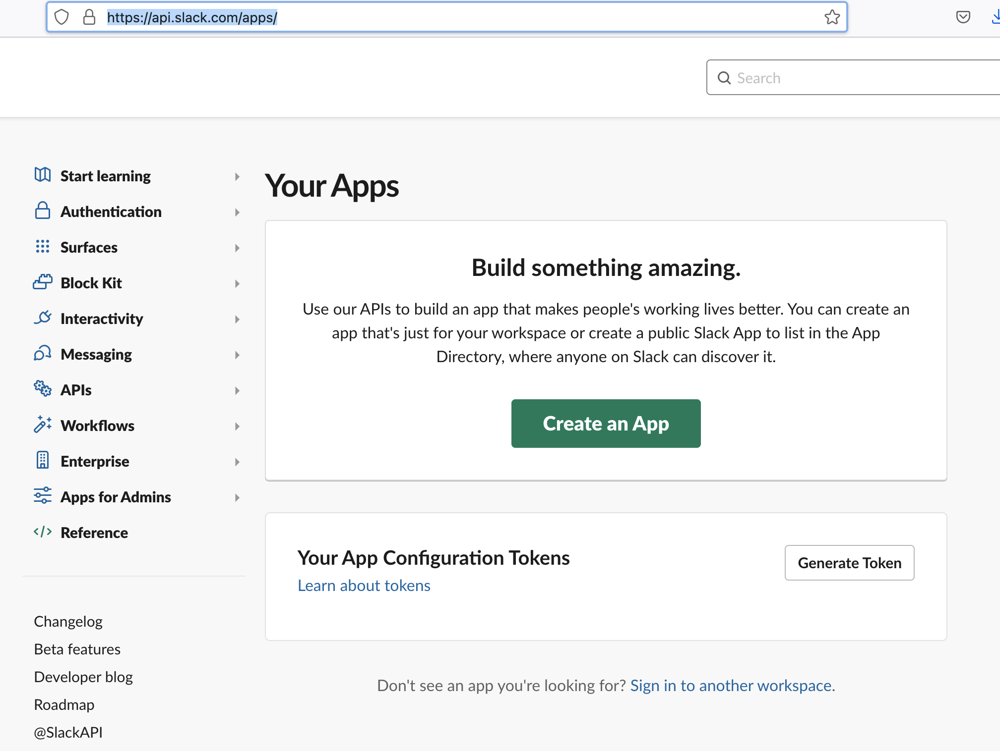
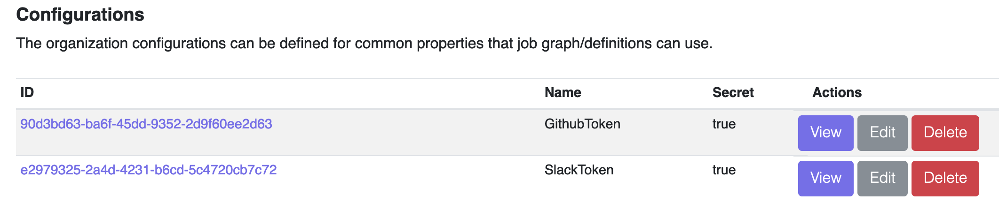

How-to Guides
Scheduling
Once a job configuration is defined and uploaded, you can submit a new job manually as follows:
curl -v -H "Authorization:
Bearer $TOKEN" -H "Content-Type:
application/json" --data '{"job_type": "hello_world", "params": { "Target": "bob" } }' $SERVER/api/jobs/requests
The above example will kick off hello_world immediately based on available resources.
Scheduling_Future
You can submit a job at scheduled time by adding scheduled_at parameter as follows:
curl -v -H "Authorization:
Bearer $TOKEN" -H "Content-Type:
application/json" --data '{"job_type": "hello_world", "scheduled_at": "2025-06-15T00:00:00.0-00:00", "params": { "Target": "bob" } }' $SERVER/api/jobs/requests
The above example will kick off hello_world job based on scheduled_at time in the future, however the job will be immediately scheduled if the scheduled_at is in the past.
Cron
See Cron Triggers for scheduling job at a regular interval using cron syntax.
Job-Filtering
See Job Filtering for filtering scheduled job.
Configs
In addition to specifying variables in the job-configuration and pass as request parameters, you can store common or sensitive configuration separately, which can be references within the job definition. These configurations can be updated using dashboard UI or API, e.g., following example stores organization specific configurations:
curl -v -H "Authorization: Bearer $TOKEN" -H "Content-Type: application/yaml" \
$SERVER/api/orgs/<org-id>/configs -d '{"Name": "MyToken", "Value": "TokenValue"}'
Similarly, following example adds configuration for a specific job:
curl -v -H "Authorization: Bearer $TOKEN" -H "Content-Type: application/yaml" \
$SERVER/api/jobs/definitions/<job-id>/configs -d '{"Name": "MyToken", "Value": "TokenValue"}'
OnExitCode
See On Exit for usage of multiple exit paths using on-exit.
Retry and Exit codes
See Retry and Exit Codes for examples of using retry with exit codes.
Caching
Formicary also provides caching for directories that store 3rd party dependencies, e.g., following example shows how all node_modules will be cached:
cache:
key_paths:
- go.mod
paths:
- vendor
In above example vendor folder will be cached between the runs of the job and the cache key will be based on contents of go.mod.
You can also specify a key instead of file based key_paths, e.g.
cache:
key: {{.CommitID}}
paths:
- vendor
This key allows sharing cache between tasks, e.g., release tag is reusing this cache with the same key:
- task_type: release
method: KUBERNETES
script:
- ls -al .cache/pip venv
cache:
key: cache-key
paths:
- .cache/pip
- venv
Repositories_Access_Tokens
The formicary supports encrypted storage for tokens and password that can be used to access the source code repositories. For example, if you are using GitHub you can create personal access token and then checkout code, e.g.,
git clone https://<your-token>@github.com/<yourid>/<your-project>.git
Alternatively, you can use username/password such as:
git clone https://<username>:<password>@github.com/<yourid>/<your-project>.git
Or you can store ssh keys in job-definition / organization configs for accessing the git repositories:
git clone https://<username>:<password>@github.com/<yourid>/<your-project>.git
General Webhooks
See Webhooks for defining general purpose webhooks.
Github Webhooks
You can submit jobs by creating GitHub Webhook, e.g., 
First set Payload URL to $SERVER/auth/github/webhook?authorization=<api-token&job=<job-type>, where the api-token can be generated from the dashboard-UI and job points to the job-type that you have configured. Next, set a secret for the payload and add a job configuration for GithubWebhookSecret, e.g.
curl -v -H "Authorization: Bearer $TOKEN" \
-H "Content-Type: application/yaml" \
$SERVER/api/jobs/definitions/<job-type>/configs -d '{"Name": "GithubWebhookSecret", "Value": "my-secret", "Secret": true}'
Anytime, when someone checks in a code, the webhook will trigger the job to execute, and the job receives following parameters:
- GitBranch
- GitCommitAuthor
- GitCommitID
- GitCommitMessage
- GitRepository
- GithubRepositoryURL
Above parameters can be used to check out the branch or commit and then execute CI/CD, e.g.
- task_type: build
host_network: true
method: KUBERNETES
working_dir: /sample
container:
image: node:16-buster
before_script:
- git clone https://{{.GithubToken}}@github.com/bhatti/node-crud.git .
- git checkout -t origin/{{.GitBranch}} || git checkout {{.GitBranch}}
script:
- echo branch {{.GitBranch}}, Commit {{.GitCommitID}}
- npm install
PostCommit
You can also submit jobs by creating Git post-commit hooks by creating a post-commit file under .git/hooks such as:
#!/bin/sh
export SHORT_COMMIT=`git describe --always --long --dirty`
export COMMIT=`git rev-parse --verify HEAD`
export BRANCH=`git rev-parse --symbolic-full-name --abbrev-ref HEAD`
export AUTHOR=`git log -1 --pretty=format:'%an'`
export AUTHOR_EMAIL=`git log -1 --pretty=format:'%ae'`
export COMMIT_MESSAGE=`git log -1 --pretty=%B`
curl -v -H "Authorization: Bearer $FRM_TOKEN" \
-H "Content-Type: application/yaml" \
--data-binary @node_build.yaml $FRM_SERVER/api/jobs/definitions || echo 'failed to upload ci job configuration for node_build'
curl -v -H "Authorization: Bearer $FRM_TOKEN" \
-H "Content-Type: application/json" \
--data "{\"job_type\": \"node_build\", \"params\": {\"GitCommitID\": \"$COMMIT\", \"GitBranch\": \"$BRANCH\", \"GitCommitMessage\": \"$COMMIT_MESSAGE\"}}" $FRM_SERVER/api/jobs/requests || echo 'failed to submit ci job configuration for node_build'
You can store the job configuration in your home folder and then use above script to submit the job request. Above script assumes the $FRM_SERVER points to formicary-server and $FRM_TOKEN points to the API token, it then uploads the job configuration and then submits the job passing the commit and branch as parameters. You can then refer to those parameters from the job configuration, e.g.
- task_type: build
host_network: true
method: KUBERNETES
working_dir: /sample
container:
image: node:16-buster
before_script:
- git clone https://{{.GithubToken}}@github.com/bhatti/node-crud.git .
- git checkout -t origin/{{.GitBranch}} || git checkout {{.GitBranch}}
script:
- echo branch {{.GitBranch}}, Commit {{.GitCommitID}}
- npm install
after_script:
- ls -l
Anytime, when someone checks in a code, the webhook will trigger the job for execution, and the job will receive following parameters:
- GitBranch
- GitCommit
REST based ant workers
Use See REST executors for invoking external REST APIs when executing a job.
Customized Messaging ant workers
See Customized executors for building a customized messaging ant worker.
Notifications
You can configure your user profile to receive job notificatios via email or slack, e.g. 
Note: Slack messages require access token and see slack documentation for generating the token, e.g. 

And then add token in your organization configurations, e.g. 
See Notification Config for more information on email/slack notification configuration.
Additional References
Artifacts Expiration for expiring old artifacts.
Building Docker images for building images using docker in docker.
Scanning Golang using gosec for scanning GO source code.
Static Golang Analusis using go-kart for scanning GO source code.
Scanning containers using Trivy for scanning containers for security.
Using Templates for example of using templates in job definitions.
Advanced Kubernetes for using advanced kubernetes configs.
ETL Examples for defining ETL pipelines.
Sensor Jobs for defining polling tasks.